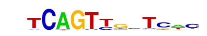

| p-value: | 1e-238 |
| log p-value: | -5.489e+02 |
| Information Content per bp: | 1.641 |
| Number of Target Sequences with motif | 4935.0 |
| Percentage of Target Sequences with motif | 32.42% |
| Number of Background Sequences with motif | 7011.1 |
| Percentage of Background Sequences with motif | 20.93% |
| Average Position of motif in Targets | 53.5 +/- 20.7bp |
| Average Position of motif in Background | 50.1 +/- 34.3bp |
| Strand Bias (log2 ratio + to - strand density) | 1.2 |
| Multiplicity (# of sites on avg that occur together) | 1.19 |
| Motif File: | file (matrix) reverse opposite |
| Rank | Match Score | Redundant Motif | P-value | log P-value | % of Targets | % of Background | Motif file |
| 1 | 0.944 | 1e-237 | -546.031251 | 25.82% | 15.45% | motif file (matrix) | |
| 2 | 0.943 | 1e-232 | -535.421974 | 30.55% | 19.46% | motif file (matrix) | |
| 3 | 0.827 | 1e-118 | -273.536194 | 25.04% | 17.53% | motif file (matrix) | |
| 4 | 0.673 | 1e-107 | -247.934748 | 11.86% | 6.89% | motif file (matrix) | |
| 5 | 0.774 | 1e-80 | -184.298869 | 0.99% | 0.13% | motif file (matrix) | |
| 6 | 0.707 | 1e-74 | -171.582455 | 47.03% | 39.70% | motif file (matrix) | |
| 7 | 0.698 | 1e-71 | -165.485259 | 26.70% | 20.61% | motif file (matrix) | |
| 8 | 0.806 |  | 1e-62 | -144.729332 | 2.88% | 1.15% | motif file (matrix) |
| 9 | 0.617 | 1e-32 | -74.838901 | 3.51% | 2.01% | motif file (matrix) | |
| 10 | 0.604 | 1e-29 | -66.830524 | 11.30% | 8.62% | motif file (matrix) |